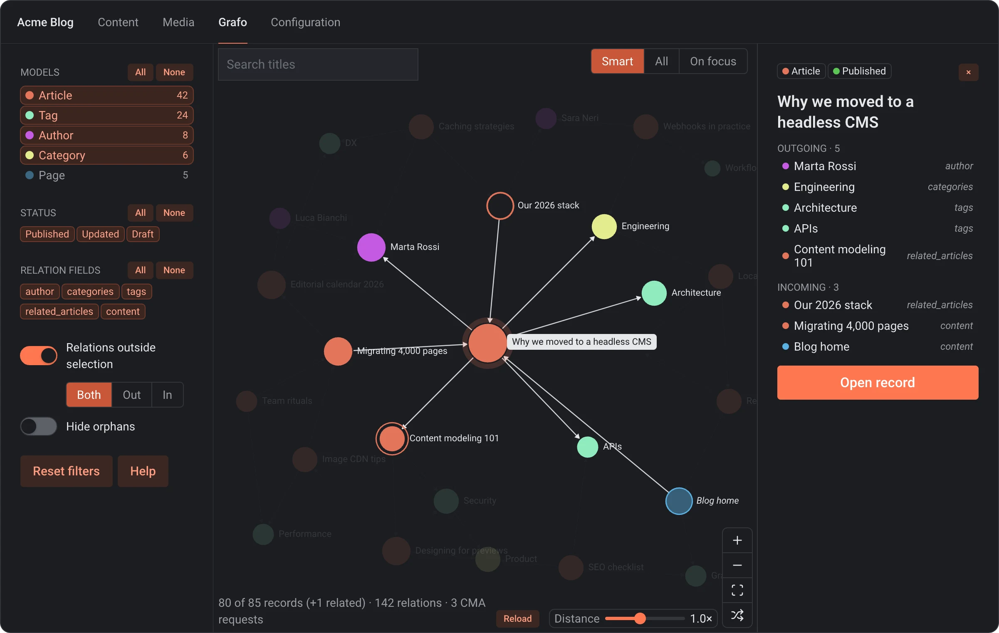
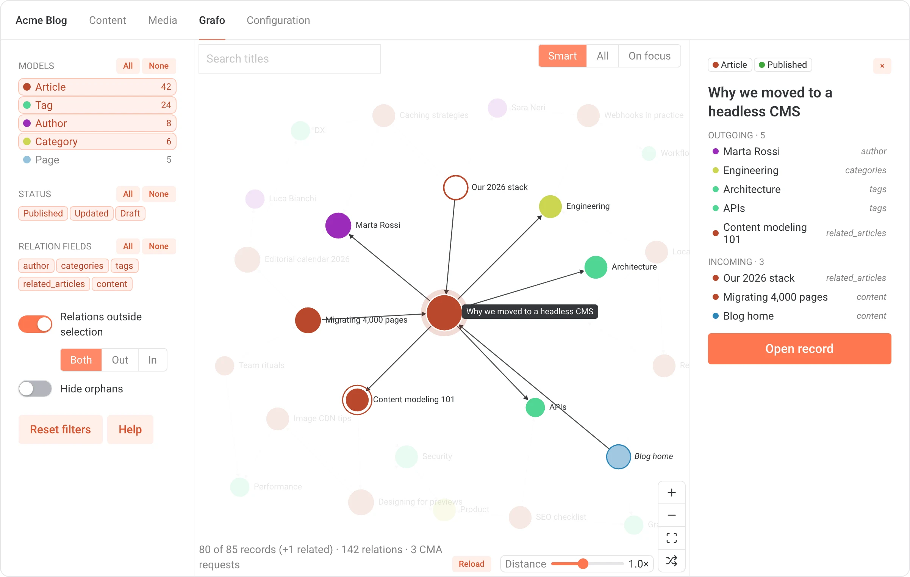

Filter what matters
Models, statuses and relation fields, with All/None per group. Double-click a model to keep only that one. Hide orphans, reset in one click.
Grafo draws the records of a DatoCMS project and the links between them. Pick a record, see what it links to and what links back, open it in the editor.
Free · MIT · reads only, never writes


Light DarkDrag to compare. Grafo follows the light or dark theme of the CMS.
DatoCMS has a rich relation model: link fields, links inside Structured Text and blocks, inverse relationships you can query through GraphQL. Developers can follow every connection through the API.
Grafo puts the same picture in front of editors. It loads the relations once and lays them out as a graph, so questions like these take a glance:
Models, statuses and relation fields, with All/None per group. Double-click a model to keep only that one. Hide orphans, reset in one click.
Outgoing and incoming links. Records of models outside the selection show up faded as context: links in, out, or both.
link and links fields, Structured Text, Modular Content, single blocks, nested blocks at any depth. Tree parents too.
Select a record and the view opens up its relations and centres on them. Keep clicking to move from record to record, then open the one you need.
Search titles, Enter jumps to the first match. Tab between records, Enter to select, Esc to clear. No mouse needed.
Every request runs with the logged-in user's token. Each role sees only the models it can read. Grafo never writes.
The layout settles on its own and node distance adapts to the canvas. Reload keeps filters, selection and zoom where you left them.
In your project go to Configuration → Plugins → Add new and search for Grafo.
Click Install and grant currentUserAccessToken. Grafo reads with your permissions.
A Grafo tab shows up in the main navigation. Pick your models and start exploring.
Pick the models Grafo opens on, and the ones it never loads (schema_migration is excluded by default). Both lists use API keys, so they carry over to sandbox environments.
DatoCMS is a headless CMS. Editors model content as records linked to each other; developers fetch it through APIs into any website or app. Plugins extend its interface, and Grafo is one of them: it adds a page to the CMS.
Discover DatoCMS